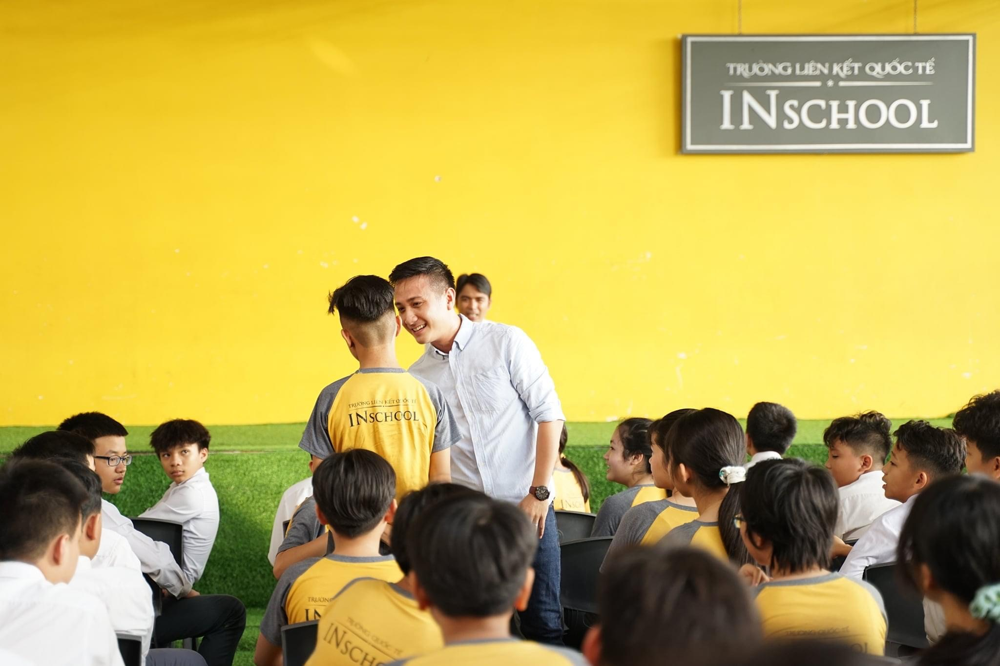
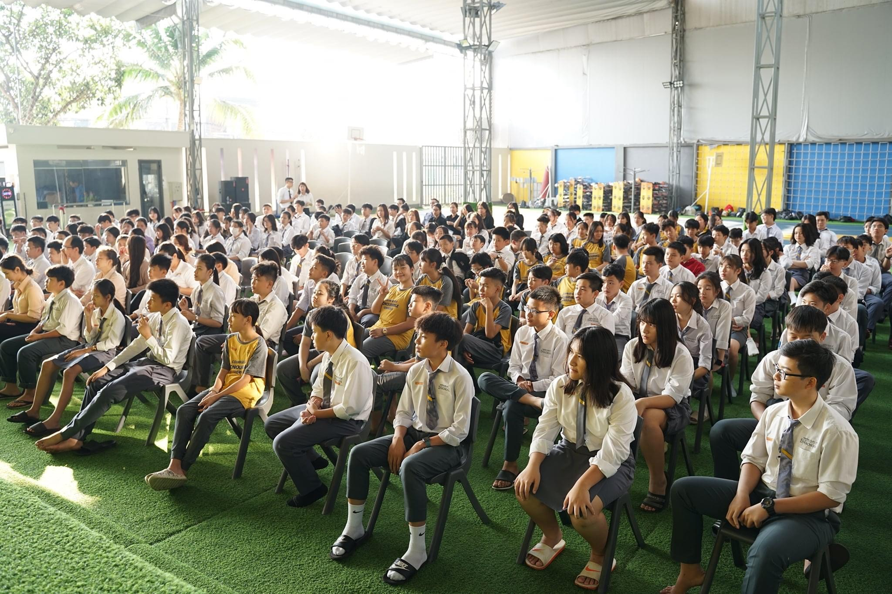

Ngôi trường mà Nhân đang theo học, INschool là từ viết tắt của International link school có nghĩa là trường liên kết quốc tế. Tuy trường mới thành lập được 3 năm nhưng chất lượng giảng dạy và cơ sở vật chất có phần trội hơn hẳn các trường trên địa bàn thành phố Long Khánh. Quan điểm đào tạo các thế hệ học sinh trở thành những công dân toàn cầu có thể đi bất cứ đâu, làm bất cứ điều gì, không ngại khó khăn của INschool đã chinh phục được học sinh - phụ huynh. Nhân tự hào vì mình là thế hệ đầu tiên của INschool. Tại INschool, mình được học tập theo phương pháp " Proactive - Tư duy chủ động" tiên tiến nhất hiện nay, trong một môi trường học đường thoải mái, lành mạnh, an toàn và giàu tính nhân văn.
Trường của Nhân gồm có 450 học sinh và 50 giáo viên (Kể cả giáo viên người nước ngoài).
Học tập và phát triển bản thân ở những lĩnh vực: Phát triển cá nhân, cảm xúc và xã hội. Giao tiếp và ngôn ngữ. Phát triển thể chất và tìm hiểu thế giới xung quanh. Phát triển tri thức.
